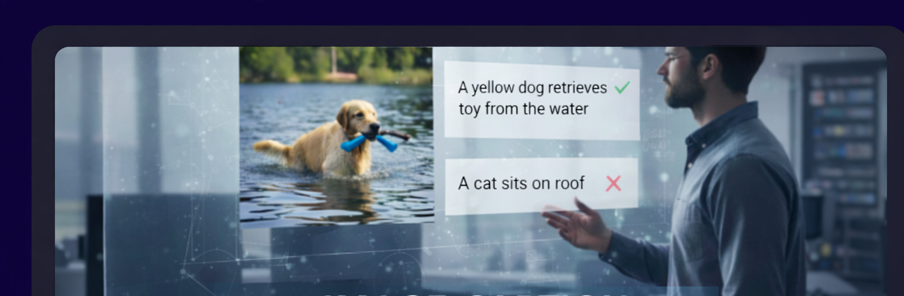
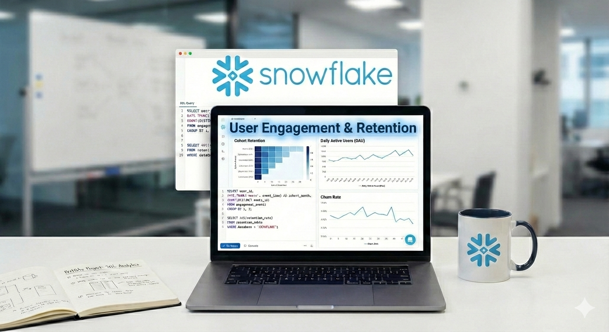
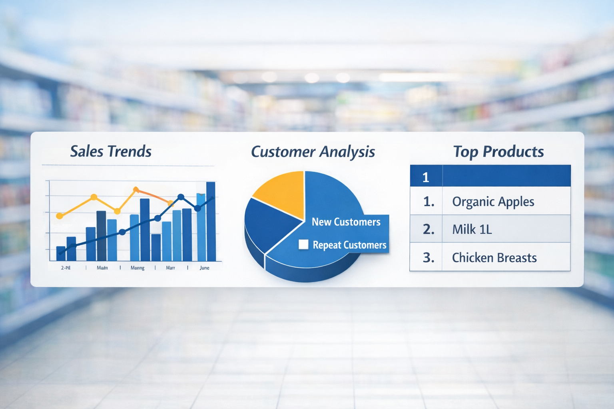

Projects
Featured Projects
Machine Learning

Image–Caption Ranking Model
Multimodal deep learning system for ranking caption quality.
Analytics

User Engagement & Retention Analytics
Snowflake SQL pipeline modeling sessions, funnels, and cohorts.
Other Projects
Machine Learning
Life Insurance Bonus Prediction
Logistic regression and ML for bonus eligibility.
Analytics

Retail Pricing Anomaly Detection
SQL-based anomaly detection on retail pricing data.
AI/ML

AI Budgeting Assistant – NestEgg
NLP-powered personal finance assistant.